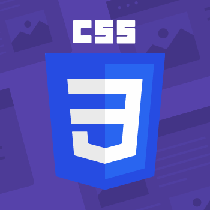

Md. Omar Faruk
Research Enthusiast | Data Analyst | Insights Explorer
About
Hello, I'am Md. Omar Faruk
A passionate Data Analyst committed to turning complex datasets into meaningful insights. With a strong foundation in data analytics, statistical modeling, and visualization tools, I specialize in uncovering patterns, solving real-world problems, and driving informed decisions through data-driven storytelling.
Skills
HTML5
With a solid foundation in data analytics, I’ve explored everything from preprocessing complex datasets to uncovering trends using visualization and statistics. I strive to make data both understandable and actionable.
CSS3

I had a solid grasp on data structuring and cleaning, I advanced to data visualization to bring insights to life. I’ve created compelling dashboards, implemented dynamic charts, and presented analytical stories that not only look polished but also adapt to various audiences and decision-makers.
JAVASCRIPT
With scripting and automation, I’ve added a new layer of power to my analytical skills—developing interactive reports, automating complex tasks, and making data exploration faster and more efficient.